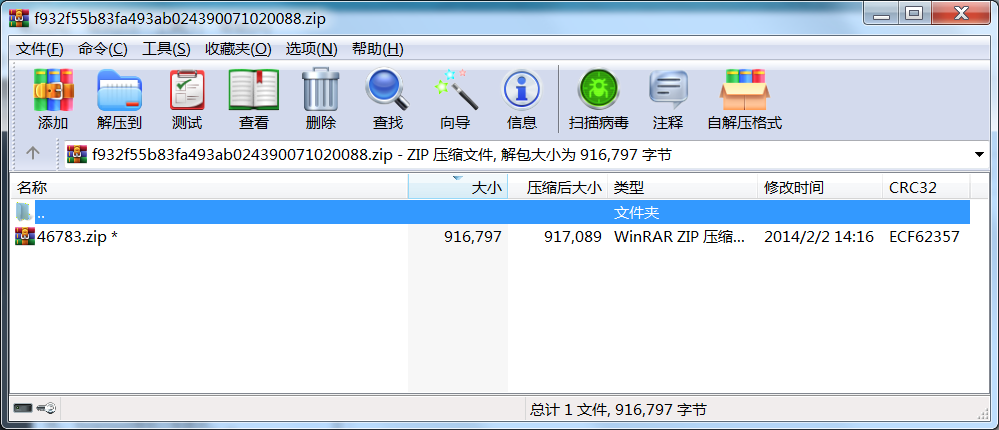

061 Miscellaneous-300
下载得到zip文件，打开是这样：

尝试了一下，密码就是46783。但打开46783.zip发现，其中有47096.zip，且密码也是47096。如此多层嵌套。
写个python脚本循环解压：
import zipfile
import re
path = 'C:/Users/Administrator/Desktop/zip/'
zipname = path + '1.zip'
while True:
if zipname != path + '73168.zip':
ts1 = zipfile.ZipFile(zipname)
res = ts1.namelist()[0].split('.')[0]
print(res)
passwd = bytes(res, 'utf-8')
ts1.extractall(path, pwd = passwd)
zipname = path + ts1.namelist()[0]
对每一层自动读取下一个压缩包的文件名，然后解压上一个压缩包。最终执行到12475.zip时突然报错。

所以和题目里提示的73168.zip好像没什么关系，12475.zip中包含mess.wav。
暴力破解。

得到mess.wav，audacity打开，频谱图。

flag：BallsRealBolls
062 Recover-Deleted-File
下载得到disk-image文件。查看文件类型。
root@kali:~/Desktop# file disk-image
disk-image: Linux rev 1.0 ext3 filesystem data, UUID=bc6c2b24-106a-4570-bc4f-ae09abbd7a88
直接用mount命令挂载会发现其中什么都没有，结合题目名称，猜测要恢复镜像中被删除的文件。用extundelete工具和restore-all参数，恢复成功1个文件。
root@kali:~/Desktop# extundelete disk-image --restore-all
NOTICE: Extended attributes are not restored.
Loading filesystem metadata ... 1 groups loaded.
Loading journal descriptors ... 17 descriptors loaded.
Searching for recoverable inodes in directory / ...
1 recoverable inodes found.
Looking through the directory structure for deleted files ...
0 recoverable inodes still lost.
查看恢复结果文件夹，有名为flag的ELF可执行文件：
root@kali:~/Desktop# cd RECOVERED_FILES/
root@kali:~/Desktop/RECOVERED_FILES# ls
flag
root@kali:~/Desktop/RECOVERED_FILES# file flag
flag: ELF 64-bit LSB executable, x86-64, version 1 (SYSV), dynamically linked, interpreter /lib64/ld-linux-x86-64.so.2, for GNU/Linux 2.6.26, BuildID[sha1]=1968c00b1c9b5fefa9ffcb94cb67b744aac942f4, not stripped
由于恢复得到的文件是只读的，直接运行会提示权限不够，先开放权限然后运行，得到flag。
root@kali:~/Desktop/RECOVERED_FILES# ./flag
bash: ./flag: 权限不够
root@kali:~/Desktop/RECOVERED_FILES# chmod 777 ./flag
root@kali:~/Desktop/RECOVERED_FILES# ./flag
your flag is:
de6838252f95d3b9e803b28df33b4baa
flag：de6838252f95d3b9e803b28df33b4baa
063 normal_png
下载得到png文件，在Kali Linux下打开提示CRC严重错误。而图片能正常显示，说明是高度被修改了。十六进制编辑器中修改高度为1000，得到flag。

flag：flag{B8B68DD7007B1E406F3DF624440D31E0}
064 Py-Py-Py
下载得到pyc格式文件，反编译：
C:\Users\Administrator\Desktop>uncompyle6 -o 1.py 58cadd8d8269455ebc94690fd777c34a.pyc
得到python脚本：
# uncompyle6 version 3.7.3
# Python bytecode 3.6 (3379)
# Decompiled from: Python 3.7.5 (tags/v3.7.5:5c02a39a0b, Oct 15 2019, 00:11:34) [MSC v.1916 64 bit (AMD64)]
# Embedded file name: pystego.py
# Compiled at: 2017-08-01 00:44:47
# Size of source mod 2**32: 1961 bytes
import sys, os, hashlib, time, base64
fllag = '9474yeUMWODKruX7OFzD9oekO28+EqYCZHrUjWNm92NSU+eYXOPsRPEFrNMs7J+4qautoqOrvq28pLU='
def crypto(string, op='encode', public_key='ddd', expirytime=0):
ckey_lenth = 4
public_key = public_key and public_key or ''
key = hashlib.md5(public_key).hexdigest()
keya = hashlib.md5(key[0:16]).hexdigest()
keyb = hashlib.md5(key[16:32]).hexdigest()
keyc = ckey_lenth and (op == 'decode' and string[0:ckey_lenth] or hashlib.md5(str(time.time())).hexdigest()[32 - ckey_lenth:32]) or ''
cryptkey = keya + hashlib.md5(keya + keyc).hexdigest()
key_lenth = len(cryptkey)
string = op == 'decode' and base64.b64decode(string[4:]) or '0000000000' + hashlib.md5(string + keyb).hexdigest()[0:16] + string
string_lenth = len(string)
result = ''
box = list(range(256))
randkey = []
for i in xrange(255):
randkey.append(ord(cryptkey[(i % key_lenth)]))
for i in xrange(255):
j = 0
j = (j + box[i] + randkey[i]) % 256
tmp = box[i]
box[i] = box[j]
box[j] = tmp
for i in xrange(string_lenth):
a = j = 0
a = (a + 1) % 256
j = (j + box[a]) % 256
tmp = box[a]
box[a] = box[j]
box[j] = tmp
result += chr(ord(string[i]) ^ box[((box[a] + box[j]) % 256)])
if op == 'decode':
if result[0:10] == '0000000000' or int(result[0:10]) - int(time.time()) > 0:
if result[10:26] == hashlib.md5(result[26:] + keyb).hexdigest()[0:16]:
return result[26:]
return
else:
return keyc + base64.b64encode(result)
if __name__ == '__main__':
while True:
flag = raw_input('Please input your flag:')
if flag == crypto(fllag, 'decode'):
print('Success')
break
else:
continue
python3运行大量报错，加入print(crypto(fllag, 'decode'))语句后python2运行，得到：
The challenge is Steganography
可以确认是pyc隐写。
D:\CTFToolkit-v1.1.0\信息隐藏\stegosaurus-master>python3 stegosaurus.py 58cadd8d8269455ebc94690fd777c34a.pyc -x
Extracted payload: Flag{HiD3_Pal0ad_1n_Python}
flag：Flag{HiD3_Pal0ad_1n_Python}
065 传感器1
题目：已知ID为0x8893CA58的温度传感器的未解码报文为：3EAAAAA56A69AA55A95995A569AA95565556 此时有另一个相同型号的传感器，其未解码报文为：3EAAAAA56A69AA556A965A5999596AA95656 请解出其ID，提交格式为flag{xxx}
差分曼彻斯特编码。先写python脚本将第一个传感器的报文解密：
id1 = 0x8893CA58
msg1 = 0x3EAAAAA56A69AA55A95995A569AA95565556
s1 = bin(msg1)[2:]
print(s1)
result = ''
for i in range(0, len(s1), 2):
if s1[i] == s1[i - 1]:
result += '1'
else:
result += '0'
print(result)
print(hex(int(result, 2)).upper())
运行结果：
30024D8893CA584181
对比一下，ID是报文解密结果的7-14位。那么对于第二个传感器同样处理：
# id2 = ???
msg2 = 0x3EAAAAA56A69AA556A965A5999596AA95656
s2 = bin(msg2)[2:]
print(s2)
result = ''
for i in range(0, len(s2), 2):
if s2[i] == s2[i - 1]:
result += '1'
else:
result += '0'
print(result)
print(hex(int(result, 2))[2:].upper())
运行结果：
30024D8845ABF34119
flag：flag{8845ABF3}
066 3-11
下载得到png文件。用Stegsolve查看，各颜色plane 0处，左上角有无规律点，可能是LSB隐写。Data Extract提取。

根据文件头判断是zip压缩包，导出解压得到flag.txt，内容为：
iVBORw0KGgoAAAANSUhEUgAAAPoAAAD6CAYAAACI7Fo9AAAAAXNSR0IArs4c6QAAAARnQU1BAACxjwv8YQUAAAAJcEhZcwAAEnQAABJ0Ad5mH3gAAAVqSURBVHhe7d1bTuRGAEDRIftfK1tIxgNRJNINbpff9xzJmvlpP6q5KpeB5u3v334Bt/bX57/AjQkdAoQOAUKHAKFDgNAhQOgQIHQIEDoECB0ChA4BQocLe39///zf9/xSCwSY0SFA6BAgdAgQOgQIHQKEDgGLv7329vb2+b/1PDqVZ8dZ67uCe13HV1sc95GRcRo9x7XeI8aZ0SFA6BAgdAgQOgR4GLdw/99d/5xz2/q61jD6Hp/pWuo2CX3NN3jrIJbuf/T6t76uNVzhHJnHrTsECB0ChM6fW/RHG/chdAgQOgQIHQJO8330Z6fx7DhrfYtni7XonHPb+rpe8eoYHHGOjDGjX9AU5twNJkLnzwz9aOM+hA4BQocAoUOA0CHAb68N7P+o1z7zaJ9r72+y1tizHzM6BAgdAoQOAZddo8/107mMrEO3eO3aRt6Lrcee/ZjRIUDoECB0CBA6BAgdAhY/dQeuw4wOAUKHAKFDgNAhQOgQIHQIEDoECB0ChA4BQocAoUOA0CFA6BAgdAgQOgQIHQKEDgFChwAfJcVDI3+cgvMZCv3RF8PaXwhb/7WQO/81kpFY5772u/E789jUuHWHAKFDgNAhQOgQcMmHcWseY/Sh09rXexaj4zK569hckRmdIVPMzzbOQ+gQIHQIEPqNTevnRxs9t/7JuDnnssUX/lnWp8+ubY9xOcsY8MGMDgFChwChQ4DQIeD0D+PmWnouIw+sJmcag69Gr22uM48BH8zoECB0CBA6BKy+Rp/rLOvEkWt45izr09E1+lbv75L9nmVMr+rUoY9GuMcxHnllSJcef+Ta5p7fVu/vkv2+Mqb8n1t3CBA6BAgdAoTO7qb19qsbY4YexgHXYEaHAKFDgNAhQOgQIHQIEDoECB0ChA4BQocAoUOA0CFA6BAgdAgQOgT4NdWTOeoz7I46Lvswo0OA0CFA6BBw6jX62uvGK6wZrdHZwmF/wGHy06GFvo451/3suCPv0RXGu0LoJ3NUOEK/N2t0CBA6BAgdAlZfo6+5LhvZ/9bntpWj1rzPjvvTMY86X15jRocAoUOAW/eT+e5WeImR8Rp1hfGuMKNDwOqhTzPDnA3YjxkdAoQOAUKHAKFDwC6/j/7o4ducwy593WTktUf67kHlluf/7LhL36fJFca7wowOAUKHAKFDwOVCn9aDczbgP4sfxo3GNPKQZ6mfjrnW8UYeQu19zf96dtyR92lkHFiXW3cIEDoECB0ChA4Bu/xk3FJHPZiCuzl16MA63LpDgNAhQOgQIHQIEDoECB0ChA4BQocAoUOA0CFA6BAgdAgQOgQIHQKEDgFChwChQ8DQJ8yMftTTWT7c5tF1rH1uI2PlQ4AYdckZfYrm6wY859YdAoQOAUKHgNUfxu3x4Gjt4+5xHSPPEfYYU+5N6L8ddR2PnOlcuA+37hcwxf91g1cIHQKEDgGH/WTcmdbUa+9vxNwxPer8uKbbhL42oXMnbt0hQOgXMM3eXzd4hdAhYGiNPtfaD7tqa3QzOKMuGfpcV4xG6GzBrTsECB0ChA4Bi9foow/ESmv0K4wV92ZGhwChQ4DQIUDoELDLD8wcxcM4+HDr0IEPbt0hQOgQIHQIEDoECB0ChA4BQocAoUOA0CFA6BAgdAgQOgQIHQKEDgFChwChQ4DQIUDoECB0CBA6BAgdAoQOAUKHAKFDgNAhQOgQIHQIEDoECB0ChA4BQocAoUOA0CFA6BAgdAgQOgQIHQKEDgFChwChQ4DQIUDoECB0CBA6BAgdAoQOAUKHAKFDgNAhQOgQIHQIEDoECB0ChA4BQocAoUOA0CFA6BAgdAgQOgQIHQKEDgFChwChw+39+vUPmuaZZgm+XxcAAAAASUVORK5CYII=
base64解密发现了PNG文件头。对于图片转成的base64密文，可以在开头加上
data:image/png;base64,
data:image/jpeg;base64,
等等
然后在浏览器地址栏输入直接得到解码后的图片。

当然python脚本或Linux命令行也同样可以将base64密文转为文件。
flag：FLAG{LSB_i5_SO_EASY}